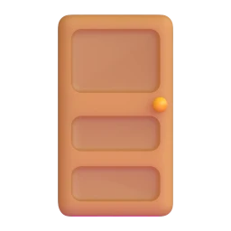

Lero · rascunho do pacote (20 palavras)
Vozes: am_michael, af_heart, bf_emma. Revisão provisória até existir a tela do admin.

water
/ˈwɔtɚ/ · água · aportuguesado: uó-ter · aceitas: water
✓ sem alertas
am_michael
af_heart
bf_emma
Can I have some water?
Posso tomar um pouco de água? · lacuna: Can I have some ___?
The water is cold.
A água está gelada. · lacuna: The ___ is cold.
meeting
/ˈmitɪŋ/ · reunião · aportuguesado: mí-tin · aceitas: meeting
⚠ unknown_word:s1:nine
am_michael
af_heart
bf_emma
I have a meeting at nine.
Eu tenho uma reunião às nove. · lacuna: I have a ___ at nine.
The meeting is in the morning.
A reunião é de manhã. · lacuna: The ___ is in the morning.

phone
/foʊn/ · telefone / celular · aportuguesado: fôun · aceitas: phone, cell phone, cellphone, mobile
✓ sem alertas
am_michael
af_heart
bf_emma
Where is my phone?
Cadê meu celular? · lacuna: Where is my ___?
My phone is on the table.
Meu celular está na mesa. · lacuna: My ___ is on the table.

coffee
/ˈkɑfi/ · café · aportuguesado: cá-fi · aceitas: coffee
✓ sem alertas
am_michael
af_heart
bf_emma
I want a coffee, please.
Eu quero um café, por favor. · lacuna: I want a ___, please.
This coffee is very good.
Este café está muito bom. · lacuna: This ___ is very good.

house
/haʊs/ · casa · aportuguesado: ráus · aceitas: house, home
✓ sem alertas
am_michael
af_heart
bf_emma
My house is near here.
Minha casa é perto daqui. · lacuna: My ___ is near here.
Come to my house today.
Venha na minha casa hoje. · lacuna: Come to my ___ today.

car
/kɑr/ · carro · aportuguesado: cár · aceitas: car
✓ sem alertas
am_michael
af_heart
bf_emma
My car is very old.
Meu carro é muito velho. · lacuna: My ___ is very old.
We can go by car.
Podemos ir de carro. · lacuna: We can go by ___.

money
/ˈmʌni/ · dinheiro · aportuguesado: mâni · aceitas: money
✓ sem alertas
am_michael
af_heart
bf_emma
I don't have any money.
Eu não tenho dinheiro nenhum. · lacuna: I don't have any ___.
Do you need money?
Você precisa de dinheiro? · lacuna: Do you need ___?
time
/taɪm/ · tempo / hora · aportuguesado: táim · aceitas: time
✓ sem alertas
am_michael
af_heart
bf_emma
What time is it?
Que horas são? · lacuna: What ___ is it?
I don't have time now.
Eu não tenho tempo agora. · lacuna: I don't have ___ now.
friend
/frɛnd/ · amigo / amiga · aportuguesado: frénd · aceitas: friend
✓ sem alertas
am_michael
af_heart
bf_emma
She is my best friend.
Ela é minha melhor amiga. · lacuna: She is my best ___.
My friend lives here.
Meu amigo mora aqui. · lacuna: My ___ lives here.
work
/wɝk/ · trabalho / trabalhar · aportuguesado: uârk · aceitas: work, job
⚠ unknown_word:s2:home
am_michael
af_heart
bf_emma
I go to work by bus.
Eu vou para o trabalho de ônibus. · lacuna: I go to ___ by bus.
I work from home today.
Hoje eu trabalho de casa. · lacuna: I ___ from home today.
good
/ɡʊd/ · bom / boa · aportuguesado: gúd · aceitas: good
✓ sem alertas
am_michael
af_heart
bf_emma
This is a good idea.
Essa é uma boa ideia. · lacuna: This is a ___ idea.
Have a good day!
Tenha um bom dia! · lacuna: Have a ___ day!
people
/ˈpipəl/ · pessoas · aportuguesado: pí-pou · aceitas: people
✓ sem alertas
am_michael
af_heart
bf_emma
Many people live here.
Muitas pessoas moram aqui. · lacuna: Many ___ live here.
I like these people.
Eu gosto dessas pessoas. · lacuna: I like these ___.
thank you
/θæŋk ju/ · obrigado / obrigada · aportuguesado: théink iú · aceitas: thank you, thanks
✓ sem alertas
am_michael
af_heart
bf_emma
Thank you for the coffee.
Obrigado pelo café. · lacuna: ___ you for the coffee.
Thank you, see you later.
Obrigado, até mais. · lacuna: ___ you, see you later.
morning
/ˈmɔrnɪŋ/ · manhã · aportuguesado: mór-nin · aceitas: morning
✓ sem alertas
am_michael
af_heart
bf_emma
Good morning! How are you?
Bom dia! Como você está? · lacuna: Good ___! How are you?
I run every morning.
Eu corro toda manhã. · lacuna: I run every ___.
family
/ˈfæməli/ · família · aportuguesado: fé-mi-li · aceitas: family
✓ sem alertas
am_michael
af_heart
bf_emma
My family is very big.
Minha família é muito grande. · lacuna: My ___ is very big.
I love my family.
Eu amo minha família. · lacuna: I love my ___.

food
/fud/ · comida · aportuguesado: fúd · aceitas: food
✓ sem alertas
am_michael
af_heart
bf_emma
The food here is good.
A comida aqui é boa. · lacuna: The ___ here is good.
Do you like Brazilian food?
Você gosta de comida brasileira? · lacuna: Do you like Brazilian ___?

book
/bʊk/ · livro · aportuguesado: búk · aceitas: book
✓ sem alertas
am_michael
af_heart
bf_emma
This book is very good.
Este livro é muito bom. · lacuna: This ___ is very good.
I read a book every month.
Eu leio um livro por mês. · lacuna: I read a ___ every month.

dog
/dɔɡ/ · cachorro · aportuguesado: dóg · aceitas: dog
✓ sem alertas
am_michael
af_heart
bf_emma
My dog likes water.
Meu cachorro gosta de água. · lacuna: My ___ likes water.
Your dog is very happy.
Seu cachorro está muito feliz. · lacuna: Your ___ is very happy.

door
/dɔr/ · porta · aportuguesado: dór · aceitas: door
✓ sem alertas
am_michael
af_heart
bf_emma
Please close the door.
Por favor, feche a porta. · lacuna: Please close the ___.
Someone is at the door.
Tem alguém na porta. · lacuna: Someone is at the ___.
happy
/ˈhæpi/ · feliz · aportuguesado: ré-pi · aceitas: happy
✓ sem alertas
am_michael
af_heart
bf_emma
I am very happy today.
Eu estou muito feliz hoje. · lacuna: I am very ___ today.
Are you happy here?
Você está feliz aqui? · lacuna: Are you ___ here?